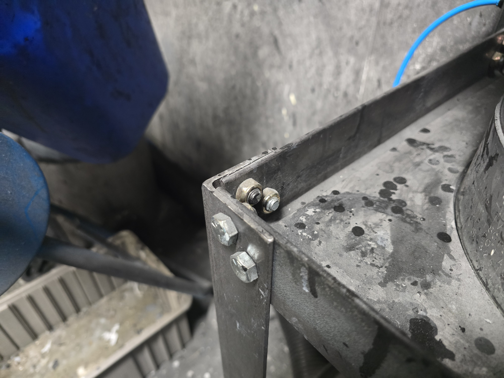
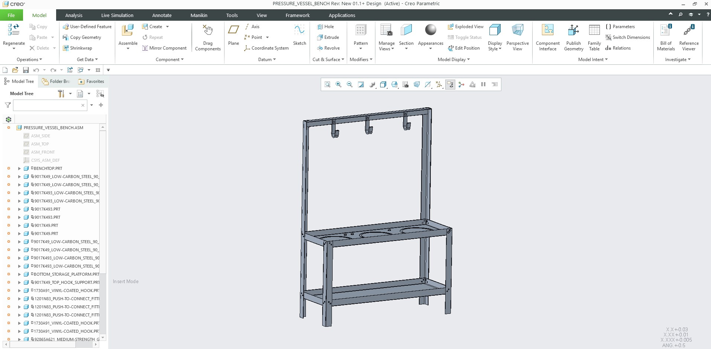

Pressurized Paint Supply Station
Mechanical Design & Testing

Overview
As part of Dometic's automated painting system, I designed and manufactured a dedicated stand to support three pressurized paint vessels that supply primer and paint to the robotic spray system. The existing setup placed the vessels directly on the floor, making routine tasks such as filling, cleaning, and maintenance physically demanding for operators. In addition, the paint supply lines were susceptible to tension from the robot's movement, creating unnecessary strain on the hoses and connections. I designed the stand to securely support all three pressure vessels at an ergonomic working height while providing organized routing for the paint supply lines. The elevated design reduced stress on the hoses, improved accessibility for routine maintenance, and created a cleaner, more reliable paint delivery system. After completing the design in CAD, I produced the manufacturing drawings, oversaw fabrication, and assembled the final structure for implementation on the production floor. The finished stand improved operator ergonomics, simplified maintenance procedures, and increased the reliability of the automated painting process by reducing hose movement and mechanical strain on the paint supply system.
Key Deliverables
- Designed and CAD a stand for three pressurized paint vessels.
- Improved operator ergonomics by raising the vessels to a comfortable working height.
- Organized and supported paint supply lines to reduce hose strain from robot movement.
- Fabricated, assembled, and deployed the final production-ready system.
Role
Mechanical Design Engineer
Tools
Creo Parametric
Technical Documentation & Gallery

